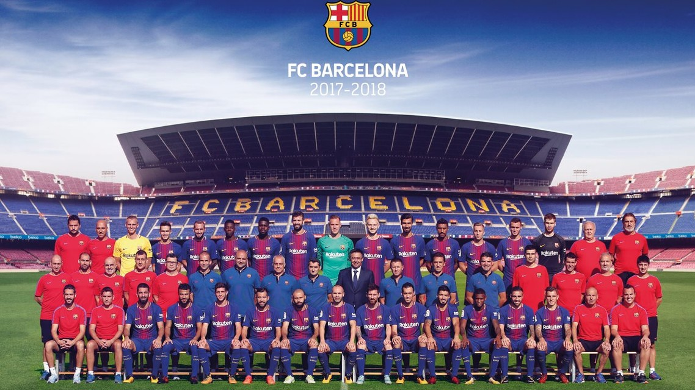
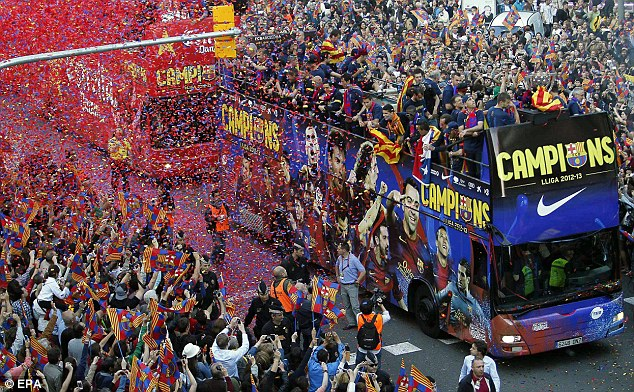
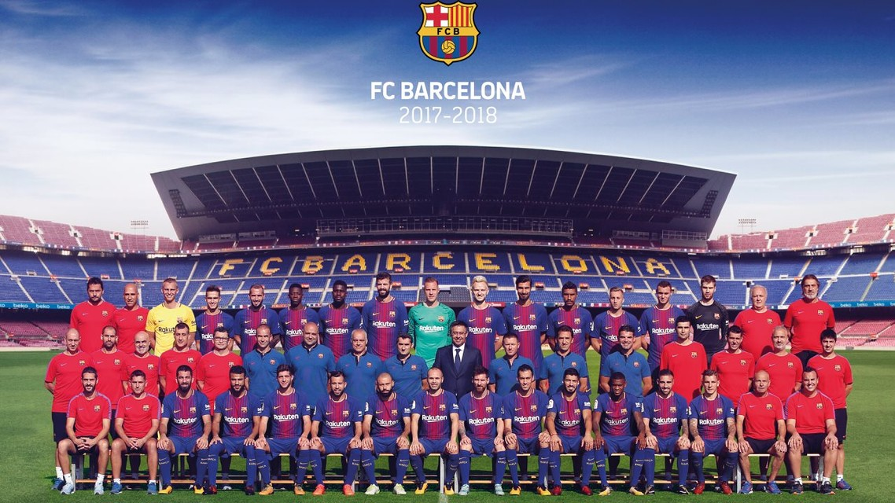
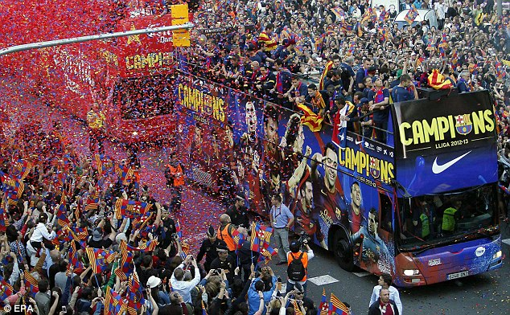

Welcome To The Greatest Club
 



Trophies
HISTORY
Foundation
Founded in 1899 by a group of Swiss, English and Catalan footballers led by Joan Gamper, the club has become a symbol of Catalan culture and Catalanism, hence the motto "Més que un club" ("More than a club"). Unlike many other football clubs, the supporters own and operate Barcelona. It is the third most valuable sports team in the world, worth $4.07 billion, and the world's third richest football club in terms of revenue, with an annual turnover of €648.3 million.[2][3] The official Barcelona anthem is the "Cant del Barça", written by Jaume Picas and Josep Maria Espinàs.
Trophies
Barcelona is one of the most widely supported teams in the world, and the club has one of the largest social media following in the world among sports teams.[9][10] Barcelona players have won a record number of Ballon d'Or awards (11), with recipients including Johan Cruyff, as well as a record number of FIFA World Player of the Year awards (7), with winners including Ronaldo, Romário, Ronaldinho and Rivaldo. In 2010, three players who came through the club's youth academy (Lionel Messi, Andrés Iniesta and Xavi) were chosen as the three best players in the world in the FIFA Ballon d'Or awards, an unprecedented feat for players from the same football school.
Barcelona is one of three founding members of the Primera División that have never been relegated from the top division since its inception in 1929, along with Athletic Bilbao and Real Madrid. In 2009, Barcelona became the first Spanish club to win the continental treble consisting of La Liga, Copa del Rey, and the UEFA Champions League, and also became the first Spanish football club to win six out of six competitions in a single year